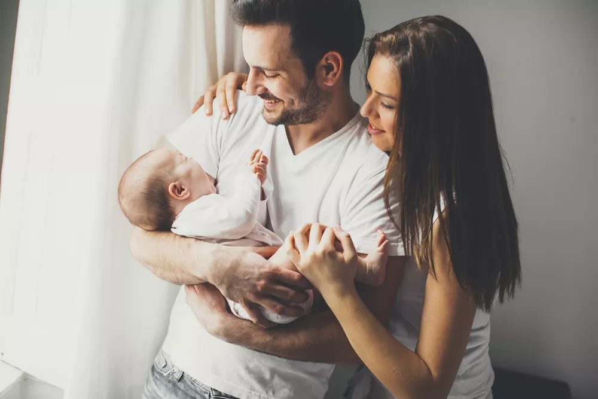

Parenfant

Avoir un bébé est un miracle que la vie offre. C'est un moment de joie, c'est la naissance d'un petit être
mais aussi la naissance d'un père et d'une mère, nous avons tendance à oublier ceci.

Il n'est pas inné de devenir parent. Il faut apprendre à connaitre cet enfant, apprendre à le comprendre alors qu'il ne parle pas. Bien souvent
la naissance d'un enfant fait que les parents et le couple se remettent en question.
Pourquoi mon bébé pleure dans
mes bras et pas dans les bras d'inconnus ?? Vais-je réussir à répondre à ses besoins?? Vais-je réussir à lui donner
l'amour qu'il a besoin???
En rentrant de la maternité, une très grande majorité des parents se retrouvent seuls avec leur enfant âgé d'à peine
trois jours. il faut leur alors trouver leur nouvelle organisation, reprendre des repères dans leur logement avec leur bébé,
répondre aux besoins de leur bébé de jour comme de nuit, faire face à la fatigue et vivre aux rythmes du bébé.
Nous vous proposons des après-midi de rencontre entre parents et futurs parents afin d'échanger et de partager sur cette
nouvelle vie.
Cliquez ici pour obtenir les dates et mes lieux au_ sein de votre région